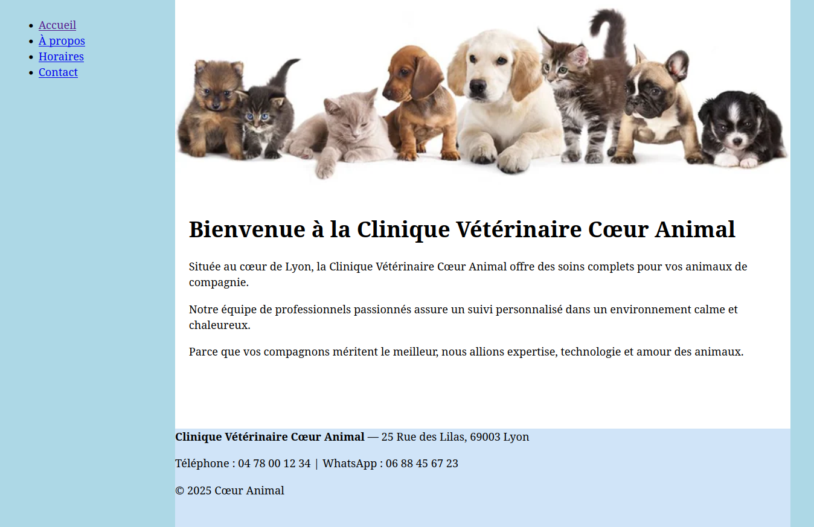
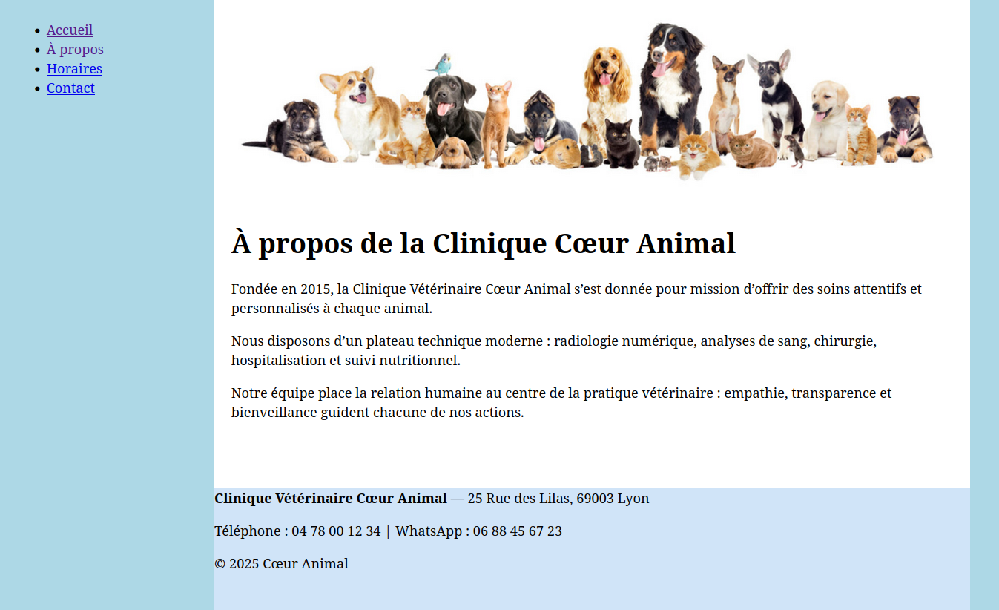
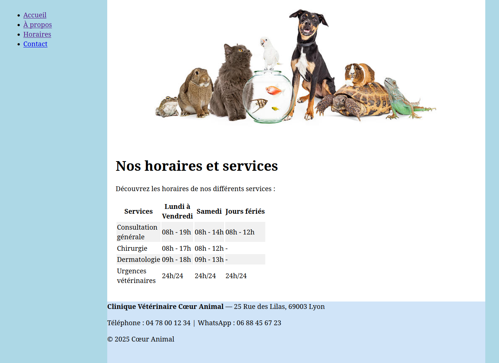
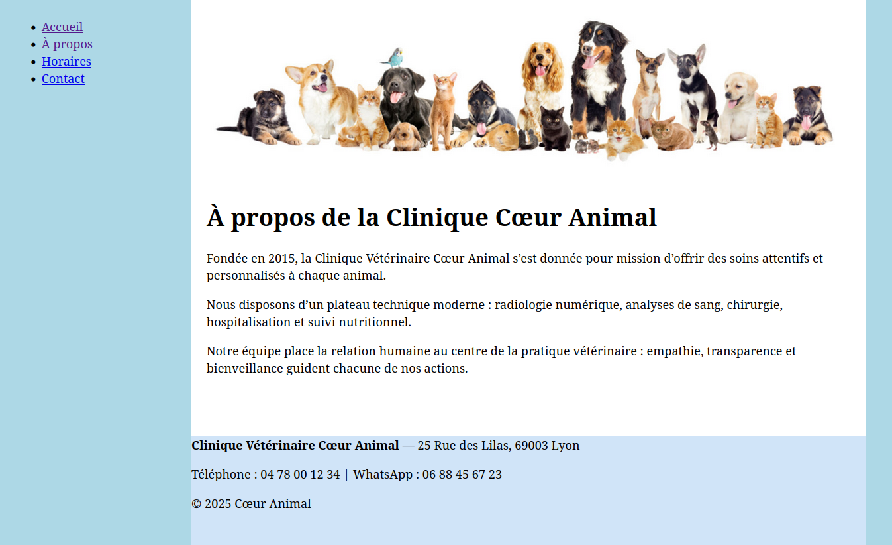
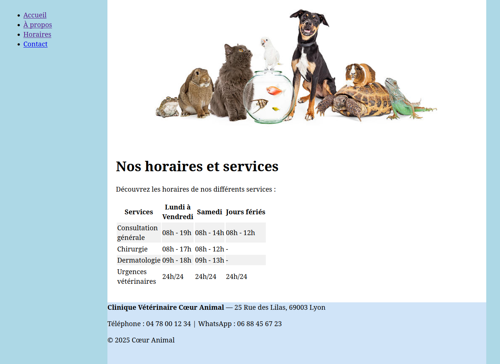
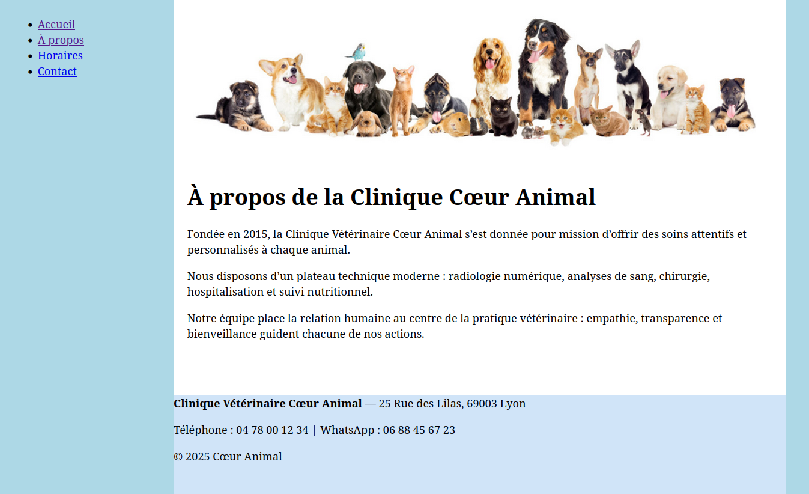
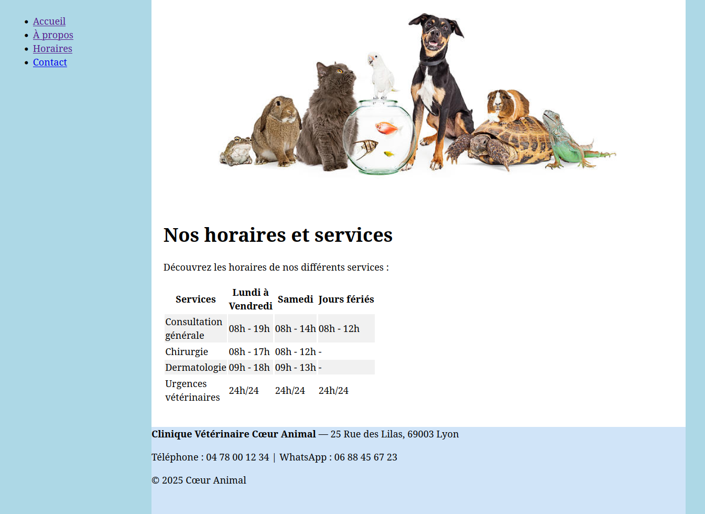

Site Web Clinique Vétérinaire

 





Description
Un site web fictif créé dans le cadre d’un projet d’apprentissage HTML. Le but est de reproduire la structure complète d’un site professionnel avec une architecture claire et une feuille de style commune.
Informations
- Durée: 1 mois
- Personnes: 1 personne.
- Type: personnel
Structure du projet
/projet-clinique/
│── index.html # Page d'accueil
│── a-propos.html # Page "À propos"
│── horaires.html # Page "Horaires"
│── contact.html # Page "Contact"
│── base.css # Feuille de style principale
│── images/ # Dossier contenant toutes les images
│ ├── header-accueil.jpg
│ ├── apropos.jpg
│ ├── horaires.jpg
│ └── contact.webp
Fonctionnalités
- Menu de navigation pour toutes les pages.
- Tableau des horaires avec style pour faciliter la lecture.
- Formulaire de contact simple avec validation HTML.
- Carte Google Maps intégrée sur la page Contact.
CSS et mise en page
- Structure générale : page centrée avec flex et fond blanc.
- Wrapper : sépare le menu et le contenu principal.
- Menu : largeur fixe et fond bleu clair.
- Header et images : images adaptées à la largeur avec object-fit: cover.
- Contenu et footer : fond blanc pour le contenu, footer bleu clair pour le bas de page.